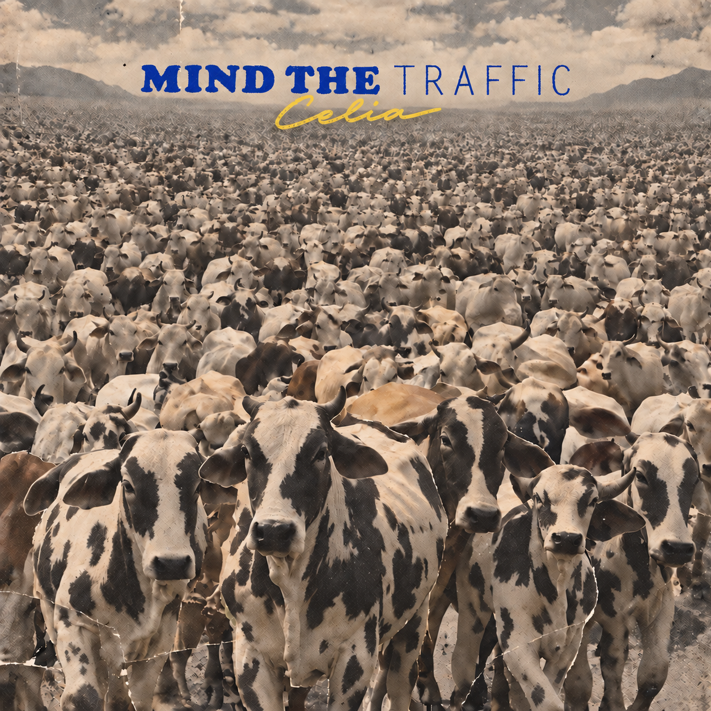
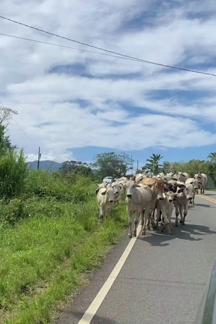
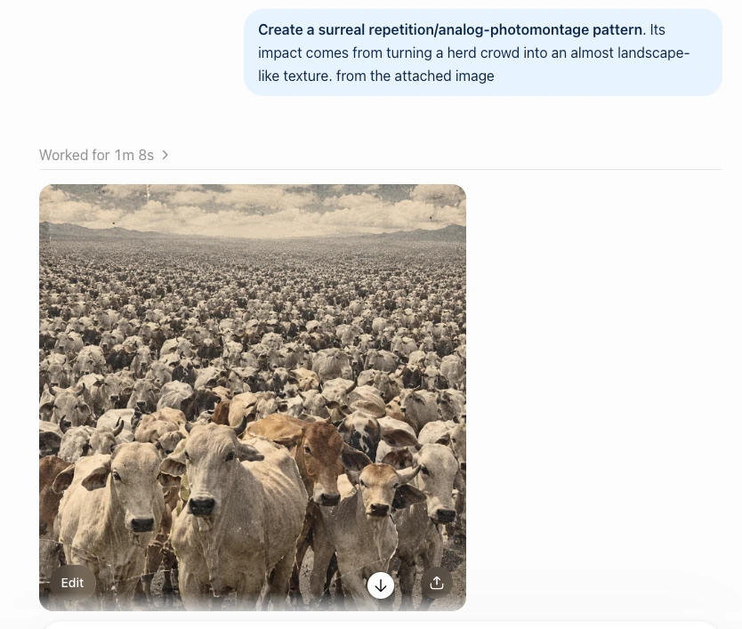
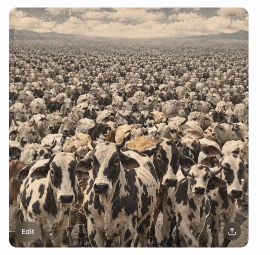
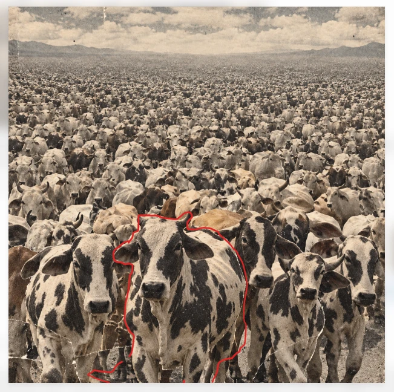
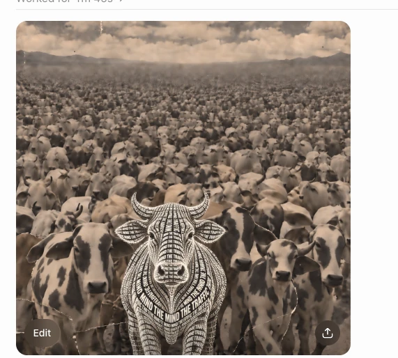
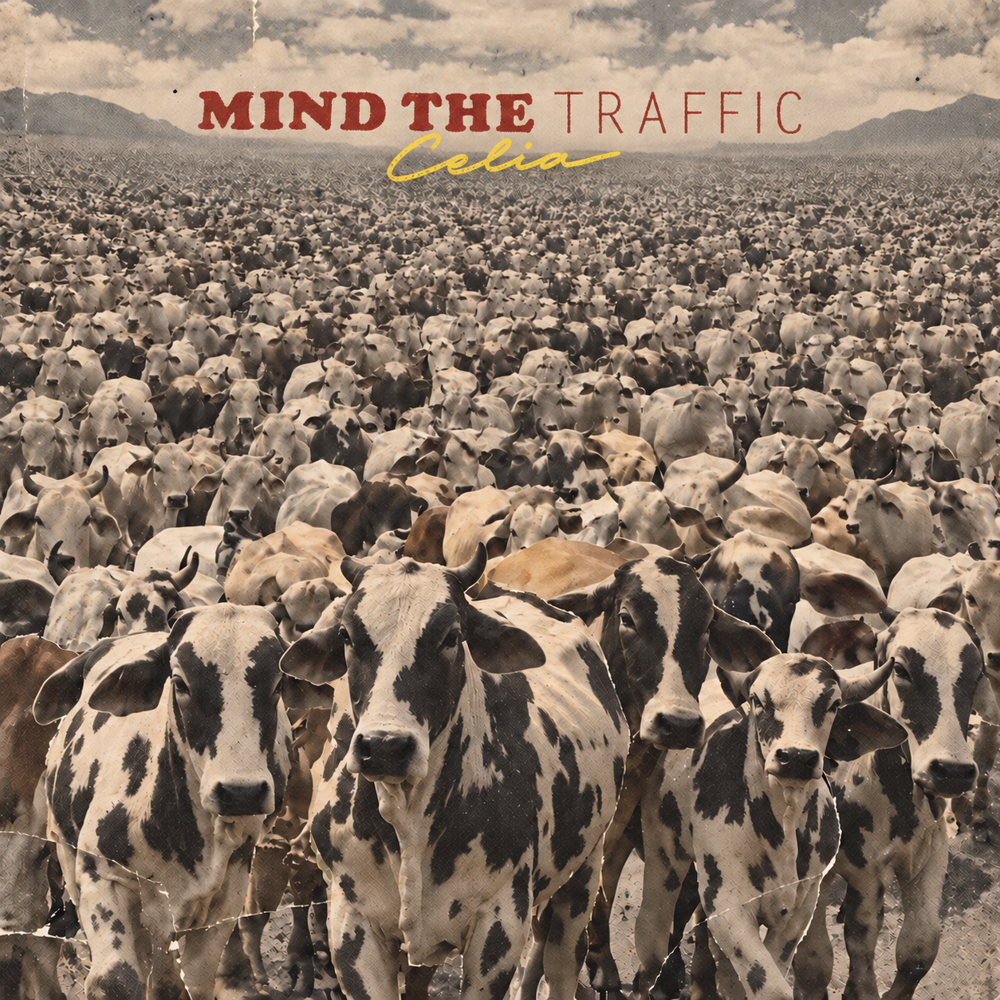
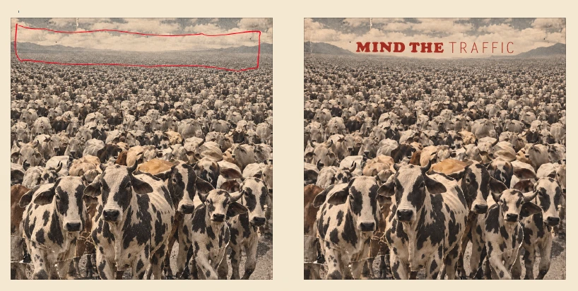
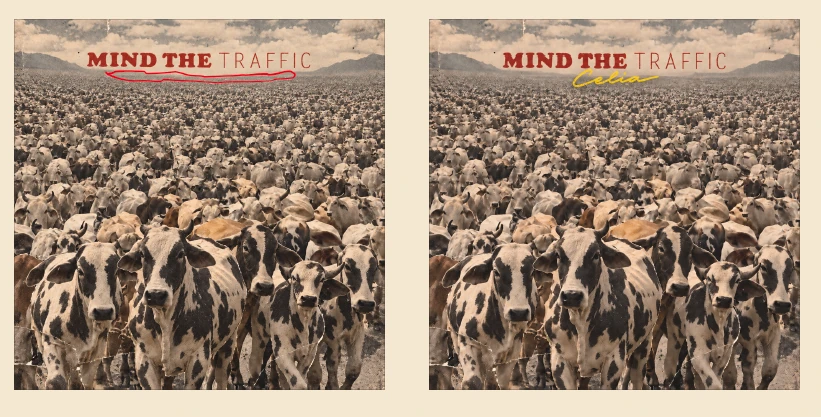

Mind
the Traffic
A photograph becomes a visual field. A herd becomes a metaphor for movement.
- Artist & design
- Celia Yang
- Medium
- AI-assisted image-making

Listen to Mind the Traffic
An original demo by Celia.
The player connects to SoundCloud when loaded.
Composition.
From road to visual field.
A photograph I took in Costa Rica became the starting point. Repetition compresses the herd into a landscape, while spotted foreground cattle give the eye a place to land.



Compare. Choose. Return.
Glitter and letter-shaped cattle tested how far the image could go. I returned to the clearer herd composition so texture and typography could work together.


Typography.
A quiet strip above the herd.
The horizon gives the title room. Heavy distressed lettering and slender, spaced capitals create contrast; a small yellow signature adds a second accent. The final decision shifts the title from red to Klein blue.

See title placement and signature studies


Specific references and marked-up images made the iterations easier to direct. Comparing versions helped me recognize when to return to an earlier composition.
From an image
to a place.
Future Seaside Outdoor Music Space